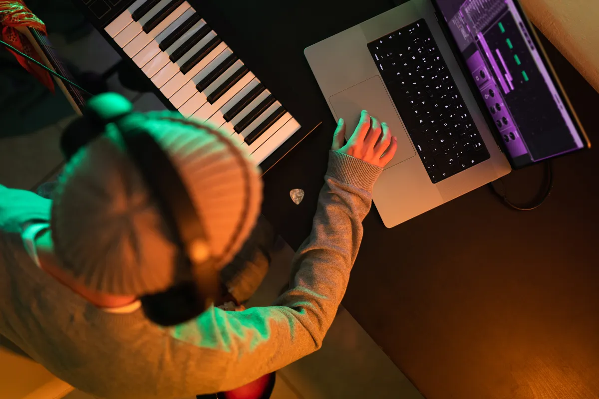
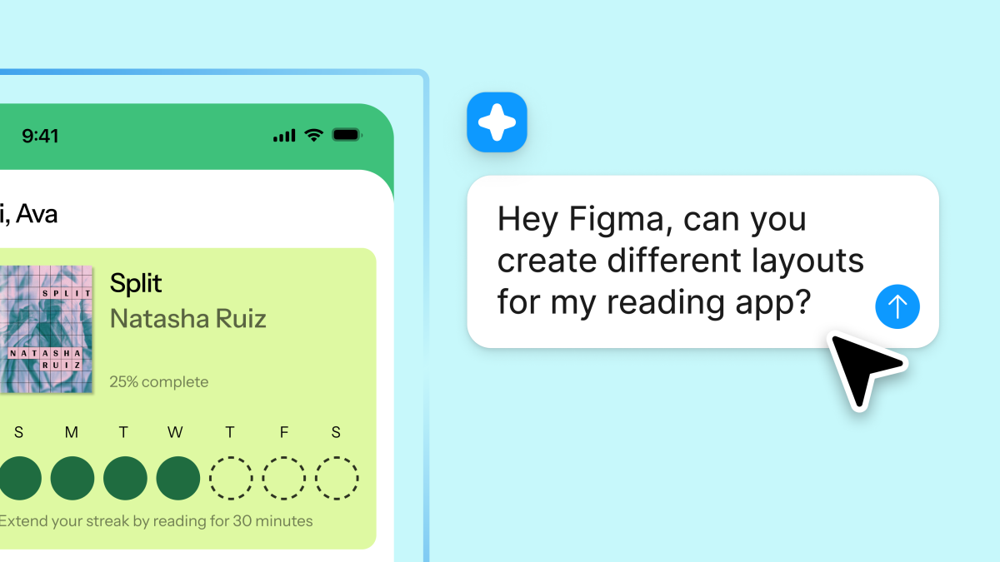
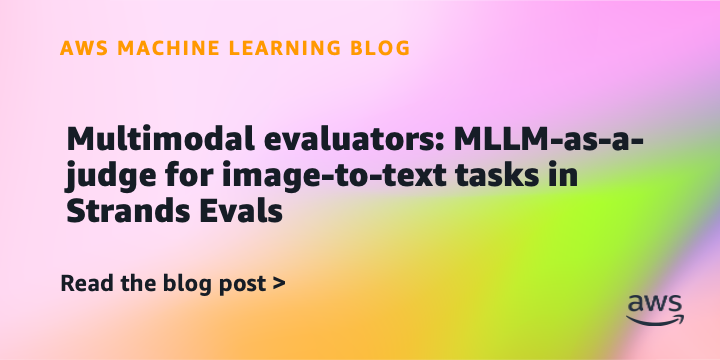
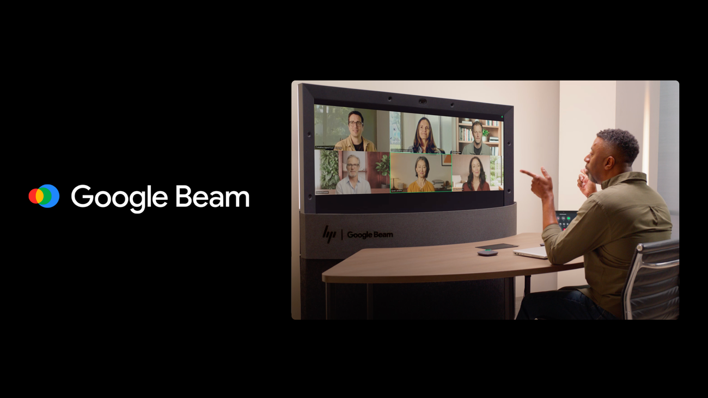

Google的推出
Google的推出NanoClaw完成融资，验证具体市场
原文：NanoClaw creator turns down $20M buyout offer, raises $12M seed insteadTechCrunch报道NanoClaw完成融资，重点看这笔钱会投向哪个具体产品问题。
NanoClaw融资只是开场，接下来要证明它不是又一个安全 PPT。
原文Stability AI先把今天的注意力拉住；生成补上另一条线索。今天先看这些具体产品怎么动。
今天值得看的对象是Stability AI、生成、NanoClaw、融资：它们分别牵出生成、融资、智能体能力，重点不在声量，而在这些产品和评测会怎样改变具体使用路径。

TechCrunch把Stability AI放进生成场景，关键是生成结果能否被编辑、追溯和稳定使用。

TechCrunch AI · businessFigma出现智能体能力新进展TechCrunch把Figma放进智能体场景，重点是它能否从演示走向连续任务和真实产品入口。

AWS Machine Learning Blog · businessAWS把MLLM-as-a-judge放进公开评测AWS把MLLM-as-a-judge放进评测语境，重点是任务集、评分方法和结果是否经得起复现。

Google AI · modelsGoogle Beam出现混合与本地部署新进展Google AI把Google Beam带到相关产品团队和使用者面前，重点看混合与本地部署怎样改变使用路径和产品边界。
TechCrunch AI · business马斯克案件受挫，OpenAI 争议还没结束TechCrunch报道马斯克对 Sam Altman 和 OpenAI 的案件受挫，法律结果暂时落定，但 AI 公司治理争议仍会继续。
 TechCrunch AI · businessAI search正在改写搜索入口
TechCrunch AI · businessAI search正在改写搜索入口TechCrunch把AI search推到搜索入口前台，搜索正在从关键词输入转向更主动的 AI 任务入口。
The Verge AI · businessVibe出现开发工具升级新进展The Verge把Vibe放在开发工具语境里，关键不是概念，而是 CLI、编码流程和实际接入方式是否变顺。
TechCrunch报道NanoClaw完成融资，重点看这笔钱会投向哪个具体产品问题。
NanoClaw融资只是开场，接下来要证明它不是又一个安全 PPT。
原文TechCrunch把Figma放进智能体场景，重点是它能否从演示走向连续任务和真实产品入口。
Figma值得看，因为它把发布词落到了具体入口、权限和使用门槛上。
原文AWS把MLLM-as-a-judge放进评测语境，重点是任务集、评分方法和结果是否经得起复现。
MLLM-as-a-judge终于要拿分数说话了，虽然榜单也会有自己的小心思。
原文Google AI报道Google的新功能或版本，重点看它补上哪段能力、面向谁开放。
Google这类发布不缺声量，缺的是用户第二天还会不会打开。
原文Google AI把Google Beam带到相关产品团队和使用者面前，重点看混合与本地部署怎样改变使用路径和产品边界。
Google Beam值得看，因为它把发布词落到了具体入口、权限和使用门槛上。
原文TechCrunch报道马斯克对 Sam Altman 和 OpenAI 的案件受挫，法律结果暂时落定，但 AI 公司治理争议仍会继续。
马斯克输了这一局，但 OpenAI 的治理故事不会因此安静。
原文TechCrunch把AI search推到搜索入口前台，搜索正在从关键词输入转向更主动的 AI 任务入口。
AI search这事不小，搜索框一变，很多流量游戏就要重新算账。
原文The Verge把Vibe放在开发工具语境里，关键不是概念，而是 CLI、编码流程和实际接入方式是否变顺。
Vibe如果真能少敲几步命令，开发者会比发布会掌声更诚实。
原文